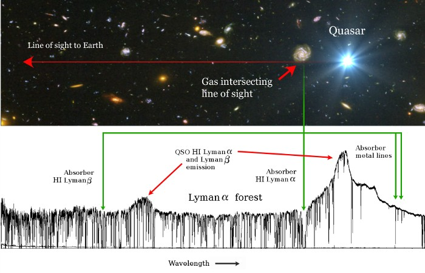

Sunrise at Las Campanas Observatory
Sunrise at Las Campanas Observatory
As an astronomer I studied the intergalactic medium (IGM); the tenous, thin gas that permeates the Universe. Of the normal matter in the universe (baryonic matter—not dark matter or dark energy), only a small fraction is made up of stars and galaxies. Most of it is in the IGM in the form of hydrogen and helium.
Usually astronomers attempt to understand the Universe by looking at electromagnetic radiation—light, radio waves or gamma rays—emitted by objects. The IGM is dark, however, and doesn't emit much radiation. The best way to detect it is indirectly, by looking at its silhouette against a bright background source of light. Gas can only absorb light with particular wavelengths, depending on the gas composition. For example hydrogen blocks light at a number of discrete ultraviolet wavelengths. By measuring the pattern of absorption against the background light source, we can understand which elements make up the IGM. We can also use the shape of absorption profiles to measure how much gas there is, and how fast it's moving around. Even very small amounts of gas produce absorption profiles we can measure. Using this technique we can detect parts of the universe that cannot be seen in any other way.
The most common background light source we use is a quasar, because they are very bright, and emit light evenly over a wide range of wavelengths. This means it's easy to see the absorption features from the IGM superimposed on top of the quasar light. The figure below shows a quasar acting as a light source (the bright blue object on the right). Light from the quasar passes through the IGM towards us. Below the image is the spectrum of quasar light that we measure on Earth, with many absorption features from the IGM superimposed on the smooth continuum.

The Lyman-α forest, as shown in the figure, is caused by hydrogen absorption. Lyman-α is the strongest absorption feature from hydrogen atoms. Due to the expansion of the universe, the wavelength of light from the background quasar is stretched (or redshifted) as it travels towards us. The further the light travels, the more it is redshifted. Therefore we see a 'forest' of lines, each at a different redshifted wavelength, each caused by a hydrogen gas cloud in the IGM at a different distance from the Earth.
Below is a selection of my publications (as of September 2015). You can search for a recent list using the ADS abstract service: All, Refereed.
My PhD thesis, 'Cosmology with Quasar Absorption Lines', is available here.
Crighton, Neil H. M.; Hennawi, Joseph F.; Simcoe, Robert A.; Cooksey, Kathy L.; Murphy, Michael T.; Fumagalli, Michele; Prochaska, J. Xavier; Shanks, Tom, submitted to MNRAS. arXiv
Crighton, Neil H. M.; Hennawi, Joseph F.; Prochaska, J. Xavier, 2013, ApJL, 776, 18. ADS
Astropy Collaboration; Robitaille, Thomas P.; Tollerud, Erik J.; Greenfield, Perry; Droettboom, Michael; Bray, Erik; Aldcroft, Tom; Davis, Matt; Ginsburg, Adam; Price-Whelan, Adrian M.; Kerzendorf, Wolfgang E.; Conley, Alexander; Crighton, Neil; Barbary, Kyle; Muna, Demitri; Ferguson, Henry; Grollier, Frédéric; Parikh, and others, 2013, A&A, 558, 33. ADS
Crighton, N. H. M.; Bechtold, Jill; Carswell, Robert F.; Davé, Romeel; Foltz, Craig B.; Jannuzi, Buell T.; Morris, Simon L.; O'Meara, John M.; Prochaska, J. Xavier; Schaye, Joop; Tejos, Nicolas, 2013, MNRAS 433, 178. ADS
Crighton, N. H. M.; Bielby, R.; Shanks, T.; Infante, L.; Bornancini, C. G.; Bouché, N.; Lambas, D. G.; Lowenthal, J. D.; Minniti, D.; Morris, S. L.; Padilla, N.; Péroux, C.; Petitjean, P.; Theuns, T.; Tummuangpak, P.; Weilbacher, P. M.; Wisotzki, L.; Worseck, G., 2011, MNRAS, 414, 28: ADS
Crighton, N. H. M.; Morris, Simon L.; Bechtold, Jill; Crain, Robert A.; Jannuzi, Buell T.; Shone, Allen; Theuns, Tom, 2010, MNRAS, 402, 1273: ADS